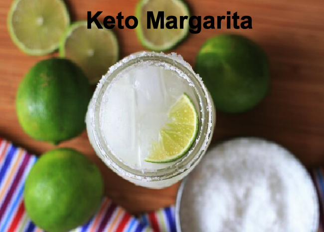

Enjoy this keto margarita without feeling guilty! This recipe uses Swerve® instead of sugar,
and orange-flavored sparkling water to mimic the taste of orange liqueur.
Ingregients
- 3 cups ice
- 2 fluid ounces tequila
- 1 fluid ounce lime juice
- 2 ½ teaspoons low-calorie natural sweetener (such as Swerve®)
- 1 tablespoon coarse salt
- 2 lime wedges
- 1 pint-sized Mason jar
- 2 fluid ounces orange-flavored sparkling water (such as La Croix®)
Directions
- Fill a shaker half-full with ice. Add tequila, lime juice, and sweetener to the shaker.
Seal and shake vigorously until outside is frosted, 10 to 15 seconds.
- Place salt on a plate. Run 1 lime wedge along the rim of the Mason jar.
Press the jar down into the salt. Fill the jar with ice cubes.
- Strain margarita into the jar. Top with sparkling water and stir. Garnish with remaining lime wedge.
- Prep: 10 mins
- Total: 10 mins
- Yield: 1 margarita
Nutrition Facts
Per Serving: 142 calories; protein 0.2g; carbohydrates 3.6g; sodium 5785.4mg.
Top↑
←Back